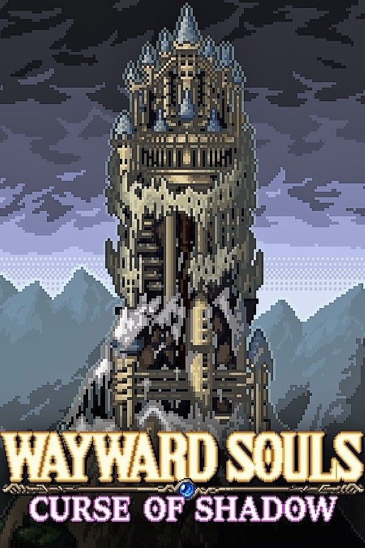

Wayward Souls
Wayward Souls
Details
|  | |
| Playtime | Not Played |
| Last Activity | Never |
| Added | 5/06/2025 3:25:10 |
| Modified | 7/06/2025 19:06:08 |
| Completion Status | Not Played |
| Library | Steam |
| Source | Steam |
| Platform | PC (Windows) |
| Release Date | |
| Community Score | |
| Critic Score | |
| User Score | |
| Genre | Action Indie RPG |
| Developer | |
| Publisher | |
| Feature | Cloud Saves Family Sharing Full Controller Support Single-Player |
| Links | Community Hub Discussions Guides News Store Page PCGamingWiki |
| Tag | 2D Action Action Roguelike Indie Pixel Graphics Roguelite RPG Souls-like |
Description
Wayward Souls is a randomly generated action-RPG with a heavy focus on story. Play as seven different heroes, all with their own abilities and playstyles. Fight through steadily greater hordes of enemies, as you learn about each character and find out what happened in the cursed tower you find yourself in.
Greatly inspired by 90's era action-RPG's, but with a faster pace and a focus on randomized replay value.

Renee uses her mobility to dash through enemies. Her Power Attack is a kick that stuns, with effects depending on her boots. She frequently finds items that let her blind, stun, or poison enemies. All of these let her perform very damaging backstabs.
Equipment and Upgrade Examples:

Blythe combines durability with a big sword that cleaves a wide area. He has a shield to block enemy attacks, and throwing axes for when he needs a faster or more long ranged option than his sword provides.

Abbie has long ranged magic attacks that do heavy damage. Her Power Attack uses her staff for shots that are longer range and pierce multiple enemies. In a tough situation, she has limited use spells for both offense and defense.
Greatly inspired by 90's era action-RPG's, but with a faster pace and a focus on randomized replay value.
- Customize each character with their own upgrades and equipment sets that change their movesets and abilities.
- Over 100 different monster types. Over 300 hats (IMPORTANT)
- Unique story events for every playable character.
- Many different areas, room types, rare rooms, encounters, and secrets.
- Unlockable game modes, including Endless Mode.
- Heavy replay value due to randomly generated levels, multiple character types, and randomized enemy groups.
Hero Characters and Abilities
Renee uses her mobility to dash through enemies. Her Power Attack is a kick that stuns, with effects depending on her boots. She frequently finds items that let her blind, stun, or poison enemies. All of these let her perform very damaging backstabs.
Equipment and Upgrade Examples:
- Mirage Dagger randomly gives her short bursts of stealth during her dashes.
- Giantstomper Boots upgrade her kicks to send enemies flying far back. Flung enemies will then damage and stun enemies they crash into. The Giantstompers also interrupt larger enemies that are stun resistant.
- Toadskin Cowters poison enemies that hit her, stunning them after a few seconds.
- Her Low Blow Upgrade permanently makes it so defeating large enemies will make her next dagger attack stun whatever she hits, even if her slash hits multiple enemies.
Blythe combines durability with a big sword that cleaves a wide area. He has a shield to block enemy attacks, and throwing axes for when he needs a faster or more long ranged option than his sword provides.
- Duskhander Sword replaces his default Power Attack's charging slash with a whirlwind spin, hitting enemies over a larger area.
- Magebane Gauntlets reduces the damage of enemy spells, while making his throwing axes destroy any enemy spell they pass through.
- Stonebeard Slab is much more durable than the default shield, but makes him move very slowly when holding the shield out to block.
- Drakefire Oil is an item the Warrior can use to make all his sword swings emit a traveling wave of flame, for a limited time.
Abbie has long ranged magic attacks that do heavy damage. Her Power Attack uses her staff for shots that are longer range and pierce multiple enemies. In a tough situation, she has limited use spells for both offense and defense.
- Salamander's Breath Staff turns her magical shots into bursts of flame that pierce even more enemies, but have very short range.
- Tremor Garb gives her a powerful footstomp that creates a shockwave to stun enemies and destroy enemy projectiles.
- Manablade Arts lets her summon a sword that does high damage, interrupts enemy attacks, can reflect enemy spells, and has a small chance to stun.
- The Mage can find powerful one use scrolls such as Fireball or Lightning Bolt, which inflict massive damage and stun to multiple enemies.
Four Additional Characters to unlock, each with their own abilities and story:
- Cyril the Adventurer, who mixes quick sword attacks with a varied assortment of spells, items, and anti-magical lanterns that burn all nearby foes.
- Hassan the Spellsword, combining mobility with direct shortsword attacks and fast charging attacks that can stun crowds of enemies.
- Svala the Cultist, cloaking herself in stealth and blinding enemies to set them up powerful dagger backstabs, with options for more direct damage spells.
- The fallen Paladin, who has overpowering magic and physical attacks, but has limited options for healing damage he sustains.